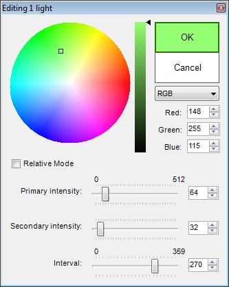

The Color Picker plugin lets you quickly edit Dynamic Lights properties as well as the sector properties "lightcolor" and "fadecolor".
Default key: K
Found in: Preferences -> Controls -> Tools -> Open Color Picker
| To edit light properties: Select one or more lights in Classic or Visual Mode and click the Color Picker button or press the shortcut key to open the Color Picker window. You can enable Relative mode if you have several lights with different settings selected and want to scale them all up/down a bit. If nothing is selected in Visual Mode, you can highlight a Light Thing and then open Color Picker window to edit it's properties. To edit sector colors (UDMF only): Select any sectors in Classic mode, or any surfaces in Visual Mode, then open the Color Picker window. Sector color ("lightcolor" property) and Fade color ("fadecolor" property) can be set in this mode. If nothing is selected in Visual Mode, you can highlight a surface and then open the Color Picker window to edit the color of the corresponding sector to which the highlighted surface belongs. |
 |